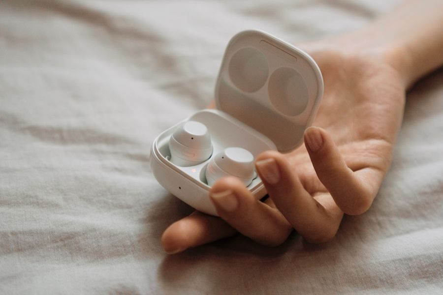

Gama media
Con iPhone valen cada euro. **Con Android no los compres**: pagas funciones que no vas a tener.

| Chips | H2 en los auriculares y U1 en el estuche MagSafe |
|---|---|
| Altavoz | Transductor propio de gran excursión con amplificador de alto rango dinámico |
| Cancelación | Activa, más modo Transparencia adaptativa y sistema de ventilación que iguala la presión |
| Audio espacial | Personalizado y con seguimiento de la cabeza, más ecualización adaptativa |
| Sensores | Dos micrófonos de formación de haces, uno interior, detector de piel, acelerómetro de movimiento y acelerómetro de voz |
| Controles | Pulsar para pausar, doble para siguiente, triple para anterior, mantener para cambiar de modo y deslizar para el volumen |
| Batería | Hasta 6 horas (5,5 con audio espacial) y 30 horas en total con el estuche. 5 minutos de carga = 1 hora |
| Carga | MagSafe, cargador del Apple Watch, base Qi o cable |
| Resistencia | IPX4 al agua y al sudor, auriculares y estuche |
| Conexión | Bluetooth 5.3. Códecs SBC y AAC: NO admite LDAC |
| Peso y medidas | 5,3 g cada auricular y 50,8 g el estuche · 30,9 x 21,8 x 24 mm |
| Almohadillas | Cuatro tallas: XS, S, M y L |
| Con Android | Pierde emparejamiento automático, cambio entre dispositivos y audio espacial con seguimiento |
Datos de la ficha oficial del fabricante (support.apple.com — AirPods Pro, especificaciones), consultada el 2026-09-02. No publicamos ningún dato que no podamos comprobar ahí.
No ponemos precios porque cambian cada día. Lo ves actualizado al entrar.
¿Comparándolo con otros? En la guía de los mejores auriculares inalámbricos en calidad-precio están las cuatro opciones de la categoría: la mejor, dos de gama media y la mejor barata.